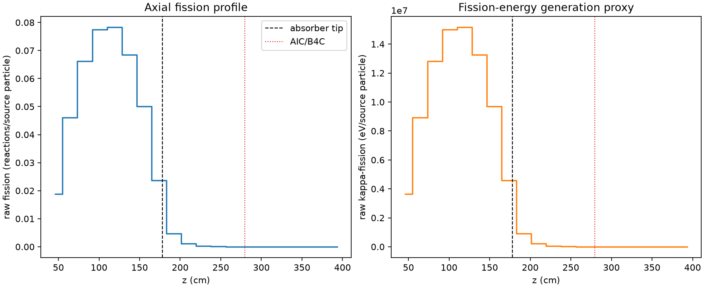
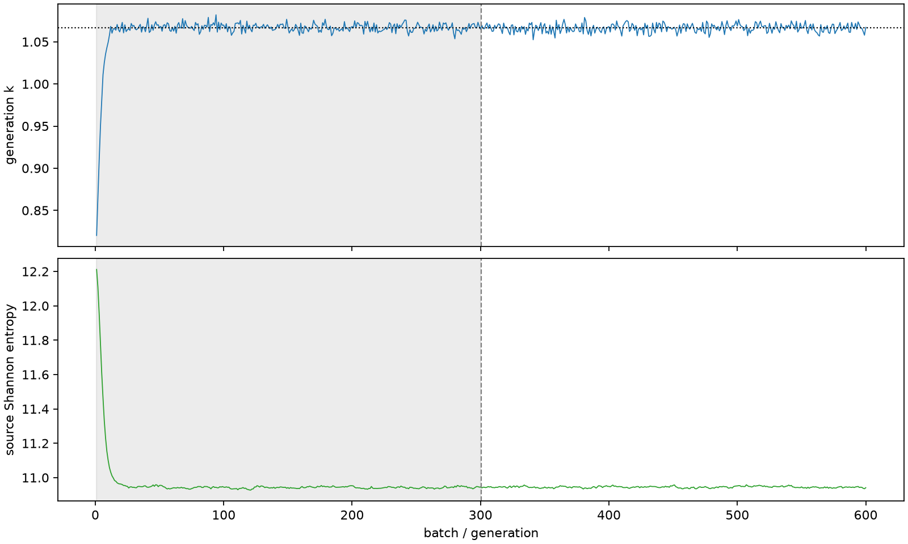

| field | value |
|---|---|
| experiment | V2-STAGE_256_OGRENCI_03-0010 |
| k | 1.0666790672089044 |
| MC standard error | 0.00017147860741884886 |
| seconds | 1240.5267821659945 |
| acceptance | not_assessed |
| convergence | review_required |
Completed is output integrity only; physical and statistical review required. Zero tallies do not prove zero production or zero uncertainty.
| diagnostic | value |
|---|---|
| geometric fuel voxels | 5280 |
| zero fission tally voxels | 1246 |
| low signal fuel voxels | 2139 |
| low signal fission share | 5.876275740812422e-05 |
| low signal kappa share | 5.878916748194761e-05 |
| important fission share | 0.9500089972519995 |
| previous filter included | 3141 |
| duration estimate s | 1562.5173488400023 |
| actual minus estimate s | -321.9905666740078 |
| fission relative MC error | statistics |
|---|---|
| all_geometric_fuel | {"voxels": 5280, "positive_mean_voxels": 4034, "zero_mean_voxels": 1246, "undefined_relative_error_voxels": 1246, "median": 0.011220049917246164, "p95": 0.8533075286820341, "maximum": 1.0000000000000002} |
| low_signal | {"voxels": 2139, "positive_mean_voxels": 893, "zero_mean_voxels": 1246, "undefined_relative_error_voxels": 1246, "median": 0.5571546494106161, "p95": 1.0, "maximum": 1.0000000000000002} |
| important_95pct | {"voxels": 1891, "positive_mean_voxels": 1891, "zero_mean_voxels": 0, "undefined_relative_error_voxels": 0, "median": 0.006158430296480789, "p95": 0.010138451792743954, "maximum": 0.011811469608534663} |
| outside_previous_filter | {"voxels": 2139, "positive_mean_voxels": 893, "zero_mean_voxels": 1246, "undefined_relative_error_voxels": 1246, "median": 0.5571546494106161, "p95": 1.0, "maximum": 1.0000000000000002} |
| kappa_fission relative MC error | statistics |
|---|---|
| all_geometric_fuel | {"voxels": 5280, "positive_mean_voxels": 4034, "zero_mean_voxels": 1246, "undefined_relative_error_voxels": 1246, "median": 0.011204941090028224, "p95": 0.8526375658610514, "maximum": 1.0000000000000002} |
| low_signal | {"voxels": 2139, "positive_mean_voxels": 893, "zero_mean_voxels": 1246, "undefined_relative_error_voxels": 1246, "median": 0.5569990080852424, "p95": 1.0, "maximum": 1.0000000000000002} |
| important_95pct | {"voxels": 1891, "positive_mean_voxels": 1891, "zero_mean_voxels": 0, "undefined_relative_error_voxels": 0, "median": 0.006150804735324014, "p95": 0.010125234320209557, "maximum": 0.01179535616071149} |
| outside_previous_filter | {"voxels": 2139, "positive_mean_voxels": 893, "zero_mean_voxels": 1246, "undefined_relative_error_voxels": 1246, "median": 0.5569990080852424, "p95": 1.0, "maximum": 1.0000000000000002} |
| axial bin | fission share | kappa-fission share |
|---|---|---|
| 1 | 0.043398464927674504 | 0.043400310877546845 |
| 2 | 0.10583685336590236 | 0.10583562796861277 |
| 3 | 0.15212241074124486 | 0.15212091790243587 |
| 4 | 0.17804013556741122 | 0.17803830478997518 |
| 5 | 0.17991909989446084 | 0.17991640369199727 |
| 6 | 0.15744783306819993 | 0.15744608890821035 |
| 7 | 0.11505228477378454 | 0.11505077584633436 |
| 8 | 0.05425996282795503 | 0.05426259538825489 |
| 9 | 0.010648827886572105 | 0.010653393607711083 |
| 10 | 0.002499930251177835 | 0.002501024759769964 |
| 11 | 0.000587972206924937 | 0.0005882489650392939 |
| 12 | 0.00014251196758382923 | 0.00014257437789420713 |
| 13 | 3.44141120466116e-05 | 3.442693861317364e-05 |
| 14 | 7.05316335430001e-06 | 7.058788000738535e-06 |
| 15 | 2.13009878849339e-06 | 2.131838530787618e-06 |
| 16 | 8.715173081415207e-08 | 8.73762943248615e-08 |
| 17 | 2.7995187781433998e-08 | 2.797477884431053e-08 |
| 18 | 0.0 | 0.0 |
| 19 | 0.0 | 0.0 |
| 20 | 0.0 | 0.0 |
Histories include the inactive-to-active transition at batch 300. kappa-fission approximates fission energy production, not total heat deposition.

